Testing numerical optimization of DSS and VSS using fme example
Adding the following folders to the path:
-FTSC
-Kalman
-KPMstats
Contents
Clear
clear;
clc;
rng(1)
******Testing for the fme example*********
n = 20;
m = 30;
t = (1:m)/m;
p = 1;
q = 1;
sigma_e = 1;
d = 2*(p+n*q);
realFixedEffect = 7*sin(2*pi*t);
realRandomEffect = randn(n,4)*[cos(2*pi*t);cos(4*pi*t);...
cos(6*pi*t);ones(1,m)];
Y = repmat(realFixedEffect, [n,1]) + realRandomEffect ...
+ sqrt(sigma_e)*randn(n,m);
Model setting
fixedDesign = repmat(ones(n,p),[1, 1, m]);
randomDesign = repmat(ones(n,q),[1, 1, m]);
logpara0 = [0;
-10;-10;
1*ones(2*q,1)];
diffusePrior = 1e7;
k = 1;
Optimization
DSS
NlogLik_dss = @(logpara) ...
fme_dss_NlogLik(Y, fixedDesign, randomDesign, t, logpara, diffusePrior);
tic
[logparahat_dss, val_dss] = fminsearch(NlogLik_dss, logpara0);
toc
Elapsed time is 209.855631 seconds.
KF
NlogLik_vss = @(logpara) ...
fme2KF(Y, fixedDesign, randomDesign, t, logpara, diffusePrior, true);
tic
[logparahat_vss, val_vss] = fminsearch(NlogLik_vss, logpara0);
toc
Elapsed time is 17.933446 seconds.
Model fitting
DSS
tic
[output_arg_dss, loglik, prior] = fme2dss(Y, fixedDesign, randomDesign, t, logparahat_dss, diffusePrior);
toc
tic
output_arg_KF = fme2KF(Y, fixedDesign, randomDesign, t, logparahat_vss, diffusePrior, false);
toc
tic
output_arg_KS = fme2KS(Y, fixedDesign, randomDesign, t, logparahat_vss, diffusePrior);
toc
Elapsed time is 0.635903 seconds.
Elapsed time is 0.036000 seconds.
Elapsed time is 0.090313 seconds.
Filtering
for i=1:n
fixedEffectMeanhat_dss = output_arg_dss{i}.FilteredMean(k,:);
fixedEffectCovhat_dss = reshape(output_arg_dss{i}.FilteredCov(k,k,:), [1, m]);
fixedEffectMeanhat_KF = output_arg_KF.FilteredMean(k,:);
fixedEffectCovhat_KF = reshape(output_arg_KF.FilteredCov(k,k,:), [1, m]);
figure;
subplot(1,2,1)
plot(t, fixedEffectMeanhat_dss, t, fixedEffectMeanhat_KF );
legend("dss", "vss");
plottitle = strcat("Filtered Mean when i=", num2str(i));
title(plottitle);
subplot(1,2,2)
plot(t, fixedEffectCovhat_dss, t, fixedEffectCovhat_KF);
legend("dss", "vss");
plottitle = strcat("Filtered Variance when i=", num2str(i));
title(plottitle);
end

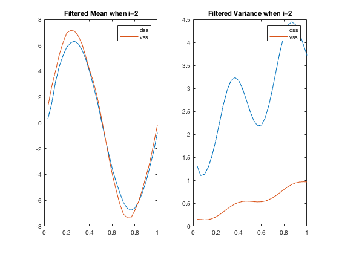 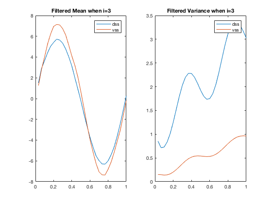 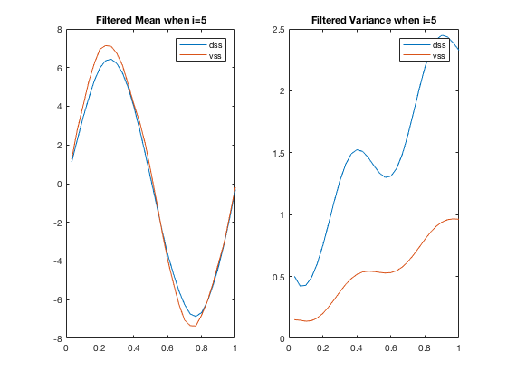 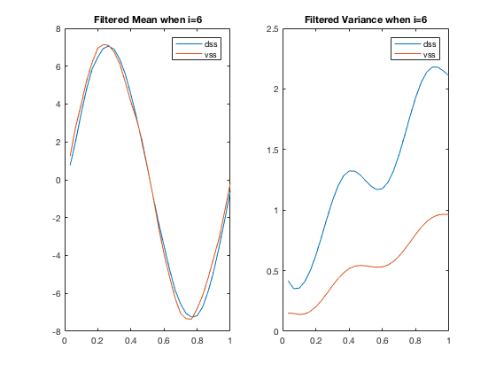 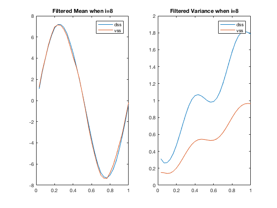 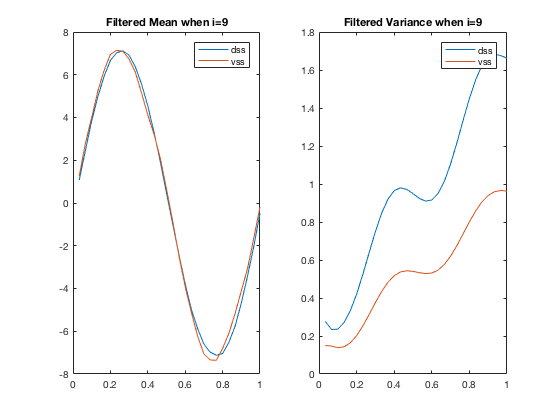 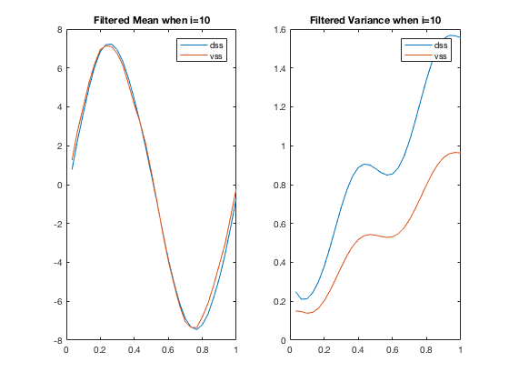 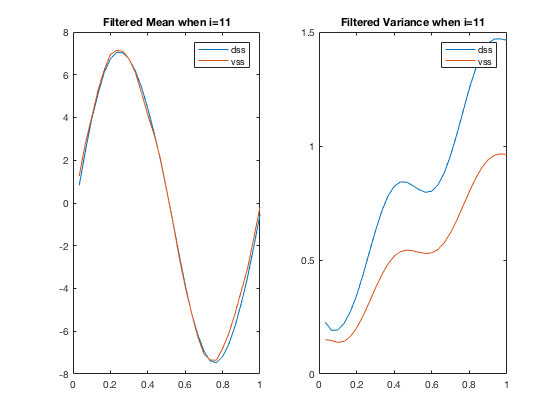 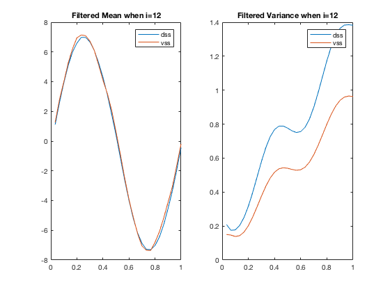 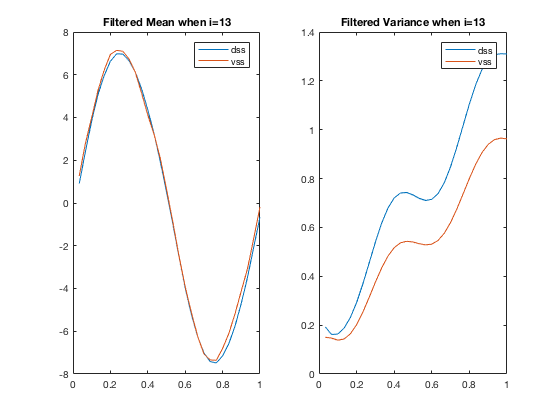 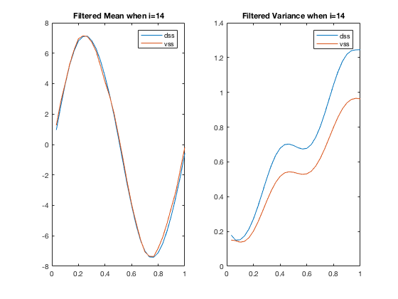 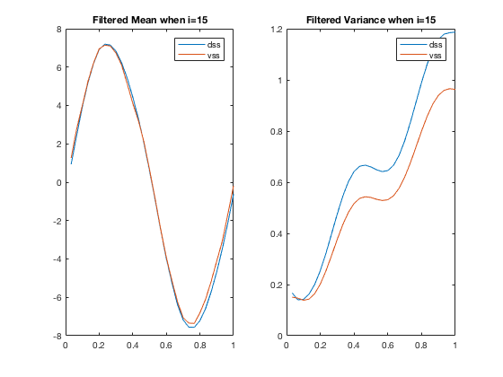 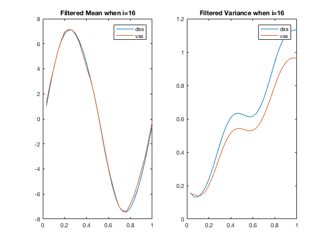 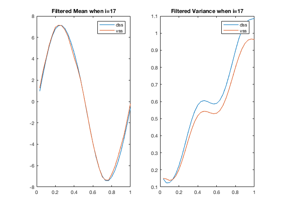

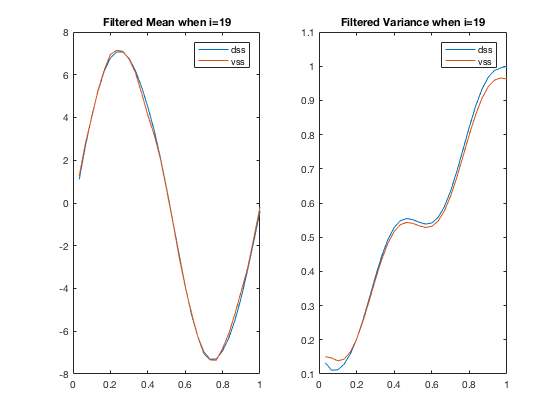 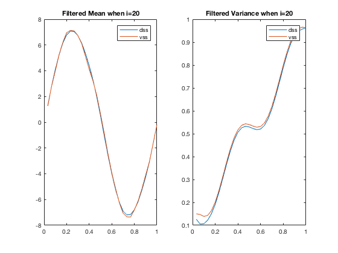
Smoothing
for i=1:n
fixedEffectMeanhat_dss = output_arg_dss{i}.SmoothedMean(k,:);
fixedEffectCovhat_dss = reshape(output_arg_dss{i}.SmoothedCov(k,k,:), [1, m]);
fixedEffectMeanhat_KS = output_arg_KS.SmoothedMean(k, :);
fixedEffectCovhat_KS = reshape(output_arg_KS.SmoothedCov(k,k,:), [1, m]);
figure;
subplot(1,2,1)
plot(t, fixedEffectMeanhat_dss, t, fixedEffectMeanhat_KS);
legend("dss", "vss");
plottitle = strcat("Smoothed Mean when i=", num2str(i));
title(plottitle);
subplot(1,2,2)
plot(t, fixedEffectCovhat_dss, t, fixedEffectCovhat_KS);
legend("dss", "vss");
plottitle = strcat("Smoothed Variance when i=", num2str(i));
title(plottitle);
end
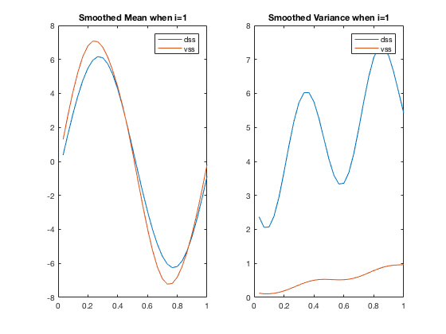 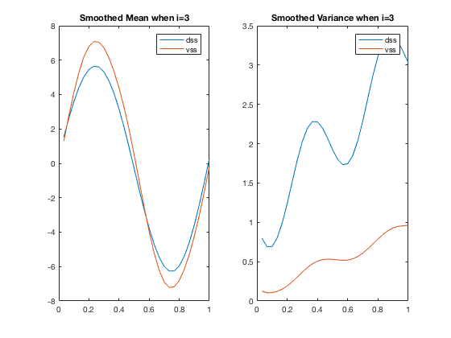 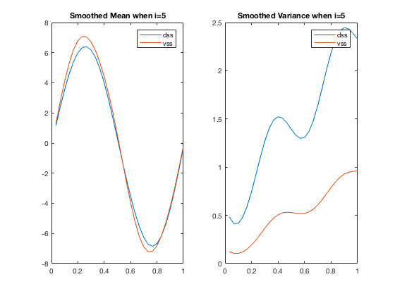 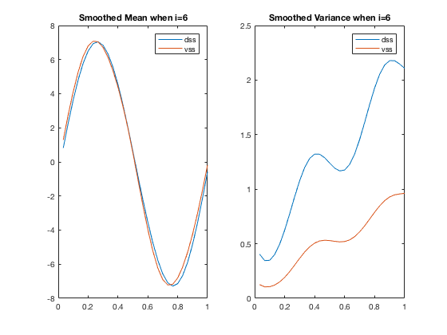 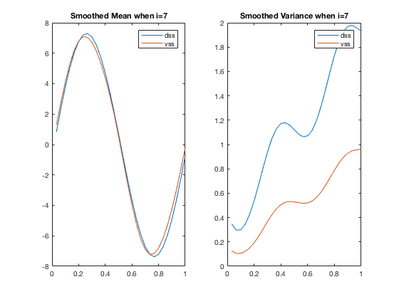 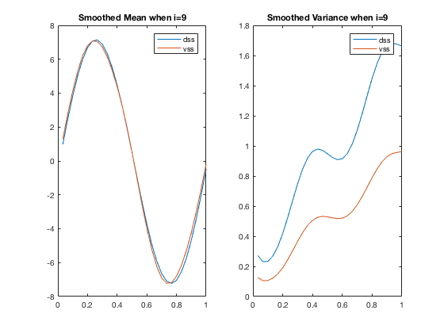 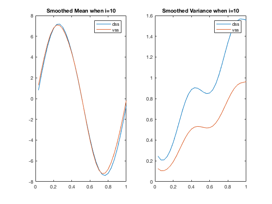 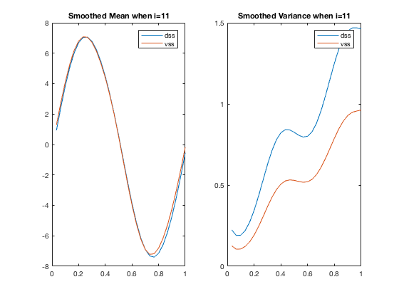 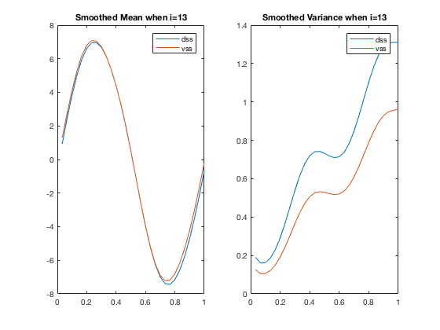

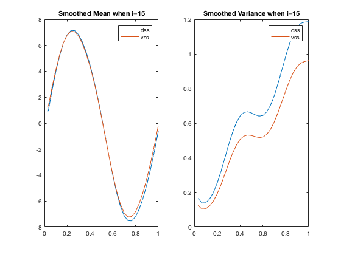 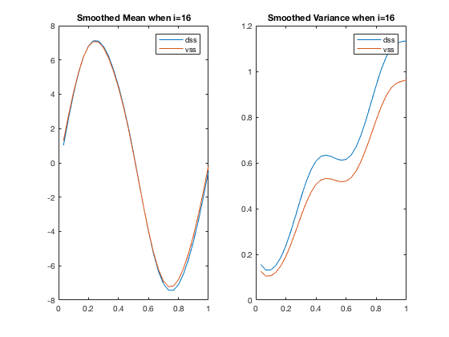 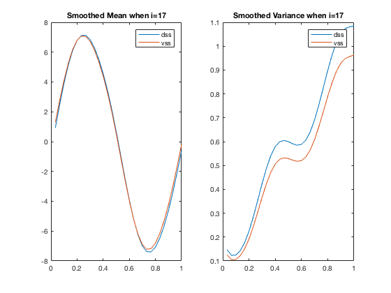 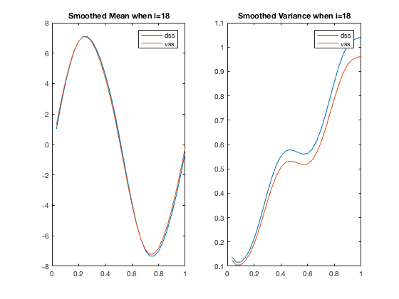 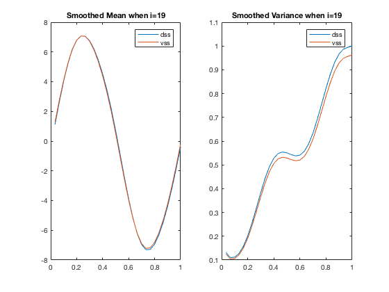 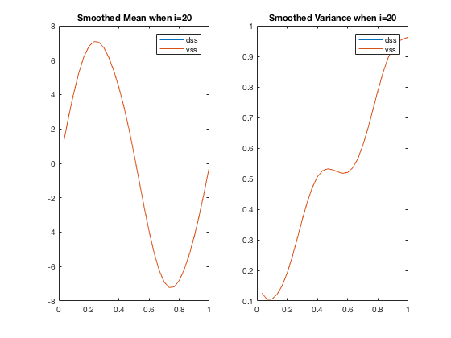
Estimation result
fprintf('-DSS estimate is %i \n', logparahat_dss(1))
fprintf('and the minimized objective value is %i. \n', val_dss);
fprintf('-VSS estimate is %i \n', logparahat_vss(1))
fprintf('and the minimized objective value is %i. \n', val_vss);
-DSS estimate is 2.045861e-01
and the minimized objective value is 1.117601e+03.
-VSS estimate is 2.045866e-01
and the minimized objective value is 1.117601e+03.